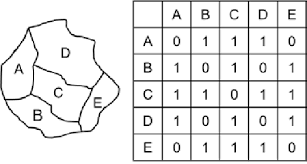

The analysis uses a synthetic teaching dataset based on three waves of the National Survey for Wales (NSW): 2020-2021, 2022-2023, and 2024-2025.
The NSW is a repeated cross-sectional survey of people in Wales, with annual survey periods covering topics such as transport, health, education, public services, housing, internet access, climate change, and the Welsh language. The cleaned microdata combine three survey periods into one harmonised survey microdata.
The raw survey geography and stratification variable is Local Authority, while the estimation domain here is MSOA. The cleaned survey file therefore assigns each respondent to a synthetic MSOA within their Local Authority using deterministic random allocation. The resulting MSOA estimates should not be interpreted as substantive findings about individual places.
This design has two purposes:
Higher spatial resolution. The synthetic MSOA assignment supports MSOA-level direct estimation, area-level SAE, spatial modelling, and unit-level SAE with poststratification.
Privacy and disclosure protection. The assigned MSOA is not the respondent’s true MSOA, so we avoid presenting fine-grained respondent locations.
Note
Survey period labels use their end year. For example, the 2020-2021 survey wave is labelled as the 2021 wave.
2 Data Preparation Pipeline
Preparation pipeline for analysis-ready inputs
2.1 Defining The Estimand
The estimand is the quantity we want to estimate. It should be defined before preparing the survey indicator or choosing a model, because it determines the outcome coding, denominator, target geography, time period, auxiliary predictors, and poststratification requirements.
Estimate what outcome among which population, across which geography and time period.
In spatio-temporal SAE, this estimand is evaluated for every combination of area and time period. Each combination is an area-time cell: one observation we want to estimate. Here, one area-time cell is one MSOA in one survey wave year, or an MSOA-year cell.
The estimand used here is:
Target estimand
Outcome and Population: Share of adults who cycle for transport frequently
Geography: MSOAs in Wales
Time: 2021, 2023, and 2025
2.2 Preparing The Survey Indicator
The frequent-cycling indicator is coded from AtFrqBke, the active-travel frequency question for cycling.
Field
Definition
Indicator name
freq_biker
Raw survey variable
AtFrqBke
Positive case
AtFrqBke is 1 or 2 (at least several times a week)
Negative case
Less frequent cycling or never cycling
Missing
Missing, invalid, or not asked
Since the survey question was administered to all respondents during some survey periods and subsampled in others, the corresponding weight variable selection rule is as follows:
Use SampleTravelWeight in survey waves where this question was asked to a subsample and the corresponding weight for this module exists,
Use SampleAdultWeight in survey waves where this question was asked to the main sample.
The cycling survey indicator input has one row per respondent-wave:
As an overview, the current cleaned data give the following usable observations for the cycling estimand:
Year
Usable observations
MSOAs with usable observations
2021
3,438
408
2023 (subsampled)
1,989
405
2025
5,886
408
Note that although the data have gaps when aggregated to the area-time level, or MSOA-year cells in this example, that is expected. SAE models will be used to borrow strength for sparse or unsampled cells.
2.3 Preparing Auxiliary Data
2.3.1 Domain Frame and Spatial Graph
The domain frame defines the complete area-time grid where estimates are needed, including those that have no sample. It also stores the numeric area and time indices required by INLA.
To include spatial structure in the model, we need an adjacency matrix that encodes neighbouring MSOAs by their numeric codes. The graph uses Queen contiguity, where two MSOAs are treated as neighbours if their boundaries touch at either an edge or a point.

Code
msoa_boundaries_sorted <- msoa_boundaries |>inner_join(area_index, by ="area_id") |>arrange(area_inla_id)msoa_neighbours <-poly2nb( msoa_boundaries_sorted,queen =TRUE,row.names = msoa_boundaries_sorted$area_id)# Write the Queen-contiguity graph in INLA's .adj format.spatial_graph_file <-file.path(base_path, "clean", "msoa_queen.adj")nb2INLA(file = spatial_graph_file,nb = msoa_neighbours)
2.3.2 Modelling input
2.3.2.1 Unit-Level Predictors
Unit-level SAE models need predictors that can be used to model the outcome at the individual level. To model individual freq_biker, we extract or transform these unit-level predictors from the survey microdata for each individual respondent row:
Column
Meaning
age
Respondent age
sex
Respondent sex (1 for Male, 2 for Female)
caraccess
Binary car access predictor (1 for car/van available, 0 for none available)
Area-level SAE models need area-level predictors that plausibly explain between-area differences in the target outcome. The area predictors are drawn from ONS UK Census 2021 at MSOA level. These variables are chosen because frequent cycling is likely to vary with population composition, density, and car access.
The raw area-level predictors age_adult_mean, female_adult_share, and caraccess_adult_share are defined for the adult target population, so they can also be used as predictor summaries to aggregate unit-level model predictions to target small areas.
Population cell counts (poststratification table) are another possible input needed to aggregate the fitted estimation model predictions to the target population for each area-time cell. We use a three-variable poststratification table with age_band, sex, and caraccess, sourced from ONS UK Census 2021.
The poststratification output has one row per area-time-age-sex-caraccess combination: